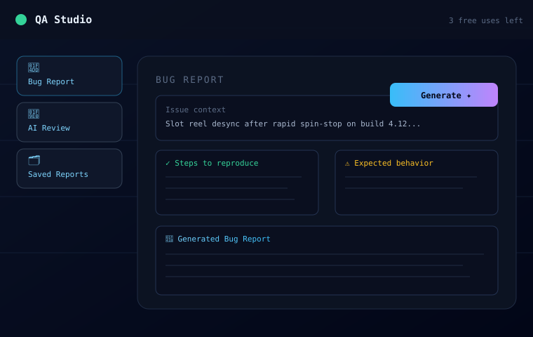
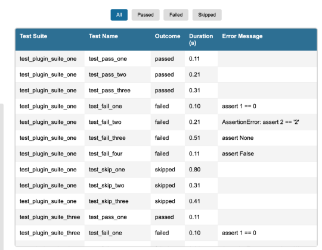
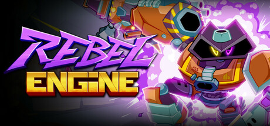
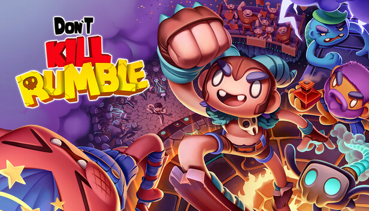
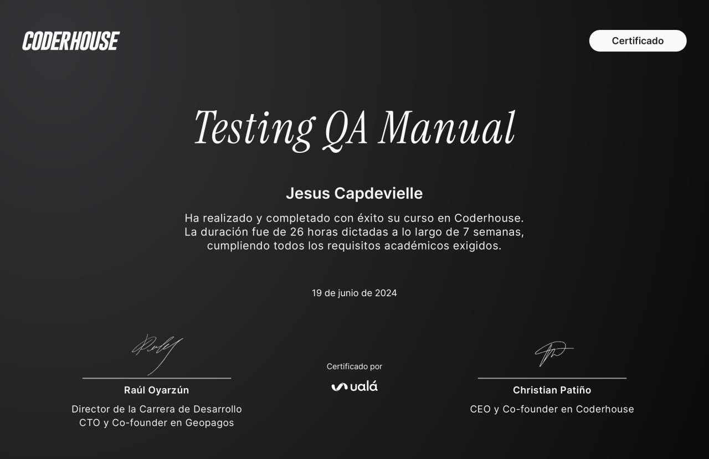
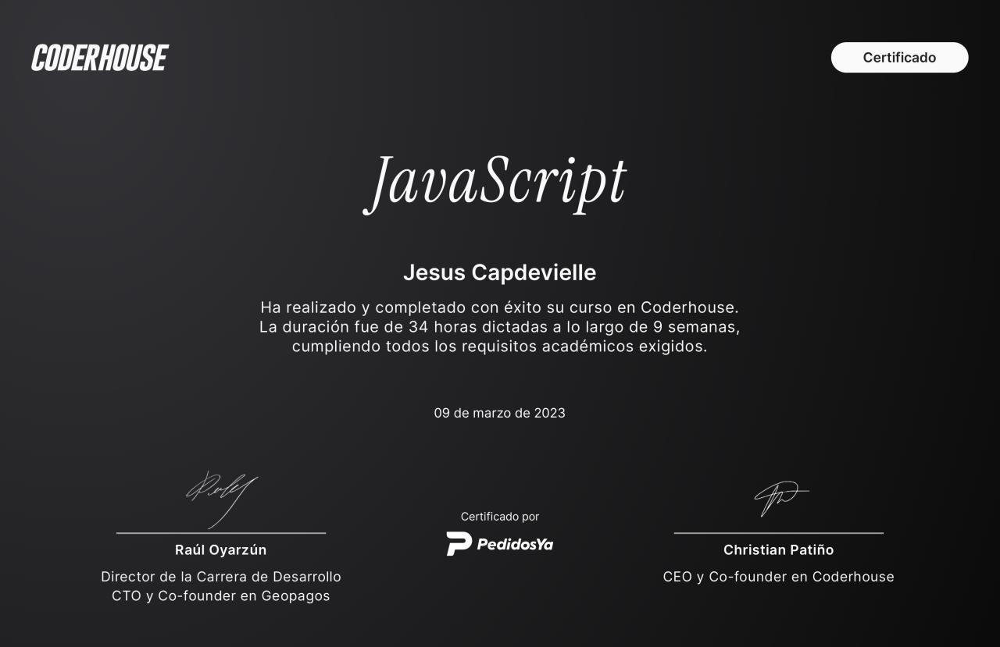
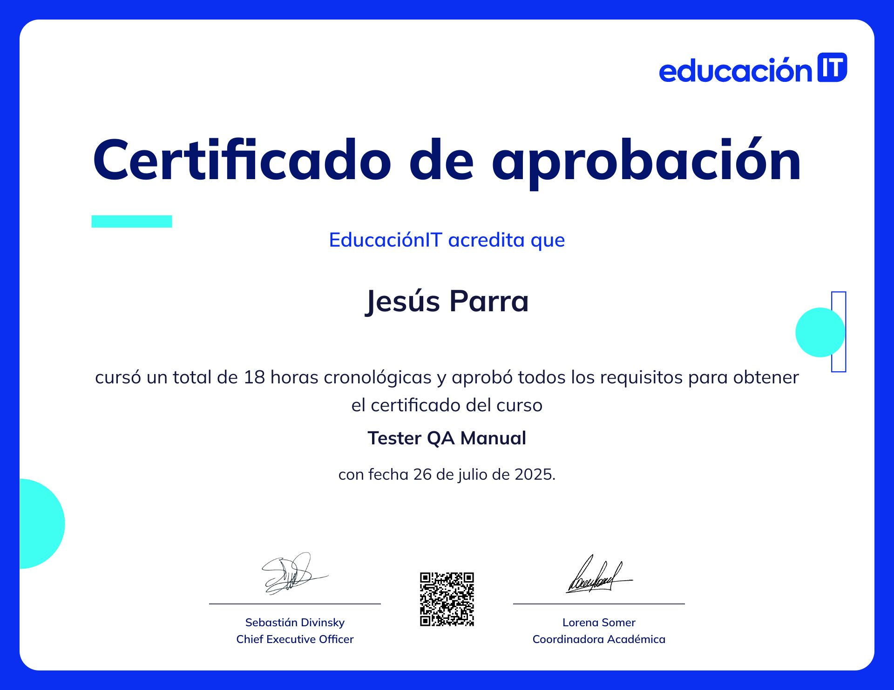
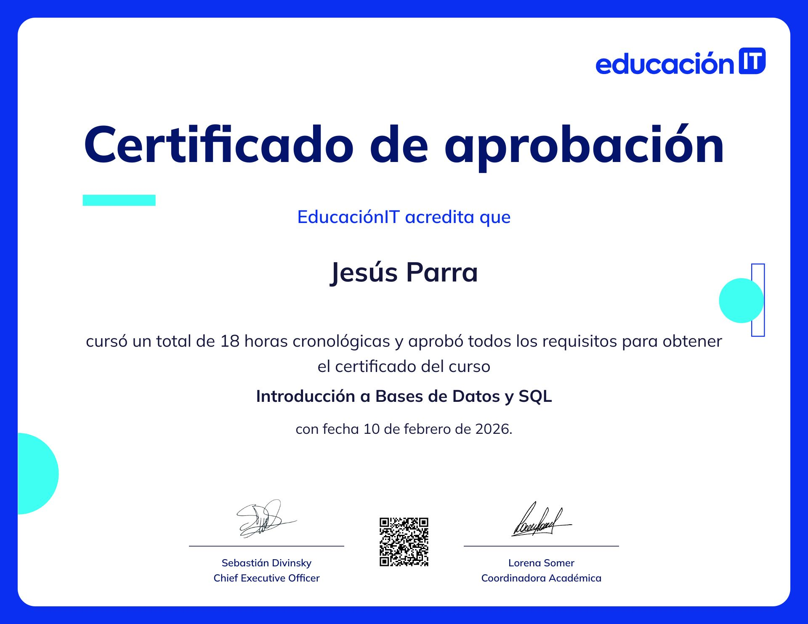

Jesús Capdevielle
Software QA & Game QA Analyst
I find what breaks before players or production do. Three years in QA across indie game testing and software validation, including the last 7 months in live-ops QA for casino & video slot titles — running regression cycles, writing test cases, and building lightweight tools that make testing faster. Currently leveling up into automation and AI-assisted QA workflows.
About
Who I am
A quick rundown of my QA background and what I'm building toward.
I'm a QA Analyst working across Software QA and Game QA, with hands-on experience in manual testing, exploratory testing, functional validation, regression testing, and release coordination across both live and in-development products.
Most of my three years in QA come from working directly with indie game development teams — acting as the QA point of contact from alpha through release, reporting bugs, and coordinating testing cycles. More recently, I've moved into live-ops QA for casino and video slot titles, validating builds across releases, catching regressions before they ship, and keeping test documentation current for fast-moving cycles.
I'm currently expanding into automation, scripting, and AI-assisted QA tooling — including building my own internal tools — to push testing coverage and turnaround time further.
Full-Cycle QA
Coverage across development, testing, maintenance, and release validation workflows.
Live Operations
Production support, live issue verification, regression coverage, and maintenance testing.
Software & Game QA
Manual and exploratory testing, functional validation, and gameplay QA experience.
Technical Growth
Expanding into automation workflows, scripting, and AI-assisted QA tooling.
Skills
QA Toolkit
Methodologies, tools, and the technical track I'm building on top of manual QA.
QA Methodologies
Core testing approaches used across software validation, live operations, and game production.
Tools & Technologies
Day-to-day stack for tracking, testing, and documenting QA work.
Technical Growth
Where I'm pushing next: automation fundamentals and AI-assisted QA workflows.
Experience
Where I've worked
Live-ops slot QA and indie game QA, side by side.
QA on casino and video slot titles across their full production cycle — from internal builds to live operations.
- Test changes across different builds to catch regressions before release.
- Report, track, and help prevent recurring issues before they reach production.
- Build and automate internal QA tools to speed up testing checklists.
- Create and maintain QA documentation, including test cases and process checklists, using internal tooling.
Acted as the bridge between QA and development teams on indie titles including Dreamcore, Rebel Engine, Soul Quest, and Don't Kill Rumble — see the Projects section below for details.
Projects
What I've worked on
From an AI-powered QA tool I built myself, to indie titles tested end to end.

QA Studio
An AI-powered tool I designed and built for Game QA: it turns written context, evidence, and findings into structured bug reports, test scenarios, test cases, and story reviews — cutting down the time spent formatting QA documentation.
Open Live App ↗
QA Automation Framework
Live on GitHubEnd-to-end test automation framework built with Python, Selenium WebDriver, and pytest — covering UI flows and API testing with a Page Object Model architecture, HTML reports, screenshot capture on failure, and a CI pipeline via GitHub Actions that runs on every push.
View on GitHub ↗
Dreamcore
ReleasedQA point of contact between the QA and development teams. Managed regression cycles, defect prioritization, and release coordination.

Rebel Engine
ReleasedFull QA cycle from alpha to release. Reported gameplay and UI bugs across multiple builds.

Soul Quest
ReleasedBug hunting, edge-case testing, and gameplay validation across release builds.

Don't Kill Rumble
In DevelopmentQA-to-dev point of contact during pre-production. Managing issue escalation and testing workflows.
Certificates
Courses & Certifications
Formal training backing up the hands-on QA experience.








Contact
Let's talk
Open to QA roles and freelance QA work. The fastest way to reach me is email or LinkedIn.